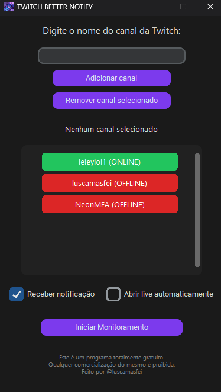

Projects

Twitch Better Notify
Twitch Better Notify was developed to enhance your experience when following Twitch live streams, allowing you to:
- Receive instant notifications when your favorite channels go live.
- View the online/offline status directly in the app with intuitive color-coded buttons.
- Automatically open the live stream when clicking the notification.
- Run discreetly in the background, minimized to the system tray.
- Easily manage your channel list: add, remove and monitor channels.